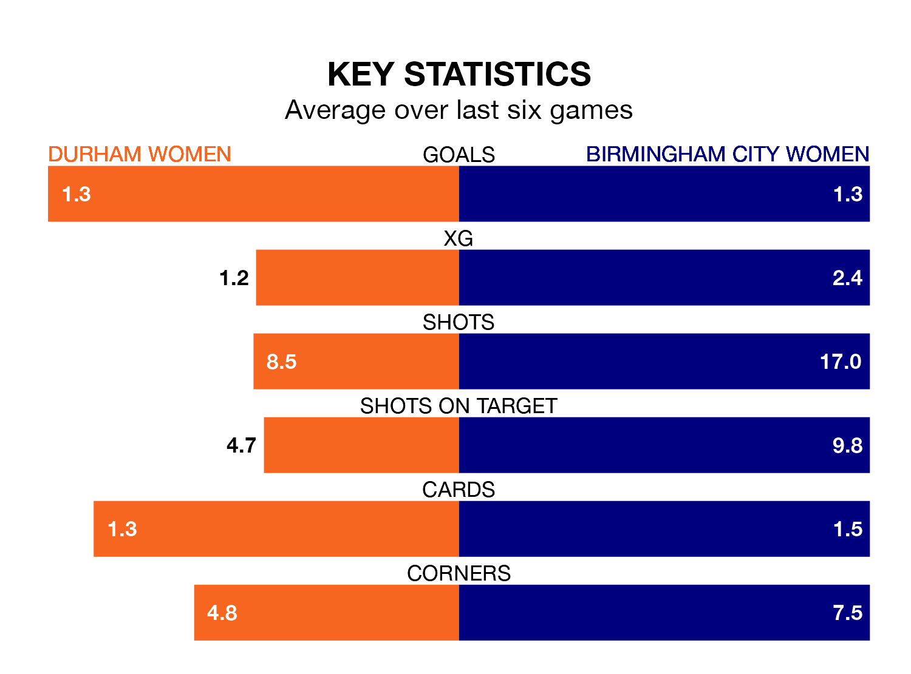

Durham Women are on a terrible run ahead of hosting Birmingham City Women at Maiden Castle Sports Park on Sunday, with just two points collected from their last six games.
Durham have picked up two draws and four losses in their last six FA Women's Championship games, and face a Blues side whose last six games have brought three wins and one draw.
With 23 goals in 21 games so far this season, Durham are scoring at below the league average rate with 1.1 goals per game. And they are conceding more than average, letting in 44 goals at a rate of 2.1 per game.
Birmingham City, meanwhile, are above average scorers, with 1.6 goals per game, compared to a league average of 1.4. They have conceded 0.9 goals per game.
With Lucy Thomas between the sticks, the Blues can rely on one of the league's safest pair of hands. She has kept nine clean sheets in her 21 appearances this season, and no 'keeper has prevented the opposition scoring more often in the FA Women's Championship.
In the hosts' net, Naoisha McAloon has two clean sheets in 10 games. She has conceded a goal every 36 minutes, four times as often as the 126 minutes between goals for Thomas.
Durham are 10th in the table after 21 games, of which they have won five and drawn five, earning 20 points.
The away team are five places ahead of Durham in fifth, with 11 wins and three draws putting them on 36 points.
In the last five years, Durham and Birmingham City have played each other on four occasions. Birmingham City won all of them.
On average, Durham scored 0.5 goals and the Blues 1.8 in those matches.
Their last meeting was on November 19, when Birmingham City won 3-1 at home.
Durham's last match was on April 21, a 1-0 loss against Reading Women.
Birmingham City beat Sheffield United Women 1-0 last time out, also on April 21, with Lily Agg on the scoresheet.
Updated: 07:59 (UTC), 26/04/24